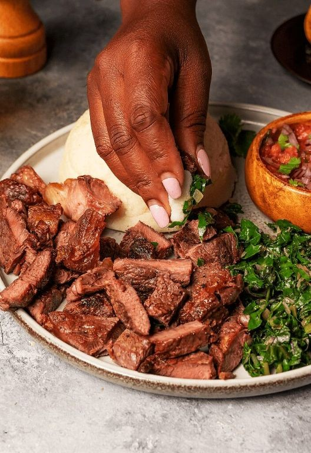

Home
Nyama Choma With Kachumbari

Description
A smoky, juicy Kenyan barbecue experience you can master tonight.
Fire up the grill for tender Nyama Choma paired with fresh, zesty
Kachumbari salad. Perfect for weekend vibes or impressing your crew.
Ingredients
- 2 pounds of beef short ribs
- 1/4 cup of vegetable oil
- 2 tablespoons of lemon juice
- A couple of garlic cloves, minced
- A generous pinch of salt
- A generous pinch of black pepper
- 2 large tomatoes, diced
- 1 red onion, thinly sliced
- A handful of fresh cilantro, chopped
- A splash of olive oil
Steps
- Preheat your grill to 400°F.
- Pat the beef short ribs completely dry with paper towels.
- Rub the vegetable oil evenly over all sides of the ribs.
- Season the ribs generously with salt and black pepper.
- Place the ribs on the hot grill and sear for 4 minutes per side.
- Move the ribs to indirect heat and grill for 45 minutes, flipping halfway.
- Check the internal temperature with a meat thermometer—it should read 145°F for medium.
- Transfer the grilled ribs to a cutting board and let them rest for 10 minutes.
- While the ribs rest, combine the diced tomatoes, sliced red onion, and chopped cilantro in a medium bowl.
- Drizzle the lemon juice and olive oil over the tomato mixture.
- Add the minced garlic to the bowl.
- Toss the Kachumbari salad gently until everything is well combined.
- Slice the rested Nyama Choma against the grain into individual ribs.
- Serve the sliced ribs immediately with the fresh Kachumbari on the side.
Outrageously tender meat falls right off the bone, while the crisp Kachumbari cuts
through the richness with every bite. Pile it all onto warm flatbread for a handheld
feast, or serve over coconut rice for a tropical twist that will have everyone asking
for seconds.
Nyama Choma With Kachumbari by Laura Hauser